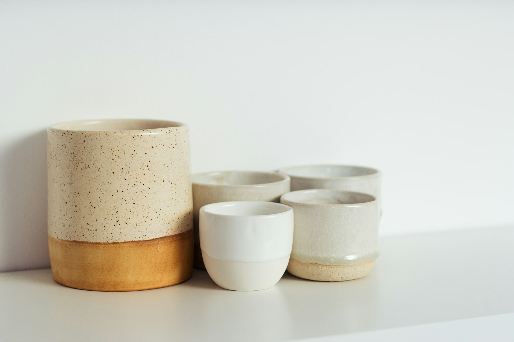

01
Atelier Mare
Identity & packaging
A coastal ceramics studio needed a name that could live on clay, paper, and a small shopfront. The wordmark is drawn from the lip of a bowl: one curve, slightly uneven. Color comes from the slip they already mix — bone, iron, and a tide green reserved for the inside of the mark.
Boxes are uncoated board, debossed, and meant to be kept. The shop card is the same board, cut smaller. Nothing in the system asks to be louder than the pot.
